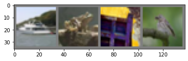
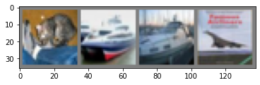

#collapse-hide
import torch
import torchvision
import torchvision.transforms as transforms“Simple vision and image classification (CIFAR10) with CNNs using PyTorch.”
- toc:true
- branch: master
- badges: true
- comments: true
- categories: [python, machine learning, pytorch, vision, classification]
- image: images/logos/pytorch.png
- use_math: true
Note: Code from the official PyTorch 60-min-blitz tutorial.
Loading the CIFAR10 Dataset
transform = transforms.Compose(
[transforms.ToTensor(),
transforms.Normalize((0.5, 0.5, 0.5), (0.5, 0.5, 0.5))])
trainset = torchvision.datasets.CIFAR10(root='./data', train=True,
download=True, transform=transform)
trainloader = torch.utils.data.DataLoader(trainset, batch_size=4,
shuffle=True, num_workers=2)
testset = torchvision.datasets.CIFAR10(root='./data', train=False,
download=True, transform=transform)
testloader = torch.utils.data.DataLoader(testset, batch_size=4,
shuffle=False, num_workers=2)
classes = ('plane', 'car', 'bird', 'cat',
'deer', 'dog', 'frog', 'horse', 'ship', 'truck')Files already downloaded and verified
Files already downloaded and verified#collapse-hide
import matplotlib.pyplot as plt
import numpy as np
# functions to show an image
def imshow(img):
img = img / 2 + 0.5 # unnormalize
npimg = img.numpy()
plt.imshow(np.transpose(npimg, (1, 2, 0)))
plt.show()
# get some random training images
dataiter = iter(trainloader)
images, labels = dataiter.next()
# show images
imshow(torchvision.utils.make_grid(images))
# print labels
print(' '.join('%5s' % classes[labels[j]] for j in range(4)))
ship frog truck birdBuilding a CNN Model with PyTorch
Architecture: * Input: 32x32-pixel images with 3 channels (RGB) → 3x32x32 images * Convolutions with 3 input channels, 6 output channels, and 5x5 square convolution → 6x28x28 images * 2x2 max pooling (subsampling) → 6x14x14 images * 6 input channels (from the previous Conv2d layer), 16 output channels, 5x5 square convolutions → 16x10x10 images * 2x2 max pooling (subsampling) → 16x5x5 images * Fully connected linear (=dense) layer with 16x5x5=400 input size and 120 output; ReLU activation * Fully connected layer with 120 input and 84 output; ReLU activation * Fully connected output layer with 84 input and 10 output (for the 10 classes in the CIFAR10 dataset); no/linear activation
Note that the layers are defined in the constructor and the activations applied in the forward function.
To calculate the output size of a convolutional layer, use this formula:
\(\frac{W−K+2P}{S} +1\) with input size \(W\) (width and height for square images), convolution size \(K\), padding \(P\) (default 0), and stride \(S\) (default 1).
Further explanation on layer sizes: Medium article by Jake Krajewski
import torch.nn as nn
import torch.nn.functional as F
class Net(nn.Module):
def __init__(self):
super(Net, self).__init__()
self.conv1 = nn.Conv2d(3, 6, 5)
self.pool = nn.MaxPool2d(2, 2)
self.conv2 = nn.Conv2d(6, 16, 5)
self.fc1 = nn.Linear(16 * 5 * 5, 120)
self.fc2 = nn.Linear(120, 84)
self.fc3 = nn.Linear(84, 10)
def forward(self, x):
x = self.pool(F.relu(self.conv1(x)))
x = self.pool(F.relu(self.conv2(x)))
x = x.view(-1, 16 * 5 * 5)
x = F.relu(self.fc1(x))
x = F.relu(self.fc2(x))
x = self.fc3(x)
return x
net = Net()Define the loss as cross entropy loss and SGD as optimizer.
import torch.optim as optim
criterion = nn.CrossEntropyLoss()
optimizer = optim.SGD(net.parameters(), lr=0.001, momentum=0.9)Training
Over 5 epochs.
#collapse-output
for epoch in range(5): # loop over the dataset multiple times
running_loss = 0.0
for i, data in enumerate(trainloader, 0):
# get the inputs; data is a list of [inputs, labels]
inputs, labels = data
# zero the parameter gradients
optimizer.zero_grad()
# forward + backward + optimize
outputs = net(inputs)
loss = criterion(outputs, labels)
loss.backward()
optimizer.step()
# print statistics
running_loss += loss.item()
if i % 2000 == 1999: # print every 2000 mini-batches
print('[%d, %5d] loss: %.3f' %
(epoch + 1, i + 1, running_loss / 2000))
running_loss = 0.0
print('Finished Training')[1, 2000] loss: 2.200
[1, 4000] loss: 1.837
[1, 6000] loss: 1.695
[1, 8000] loss: 1.587
[1, 10000] loss: 1.534
[1, 12000] loss: 1.469
[2, 2000] loss: 1.391
[2, 4000] loss: 1.377
[2, 6000] loss: 1.361
[2, 8000] loss: 1.332
[2, 10000] loss: 1.306
[2, 12000] loss: 1.297
[3, 2000] loss: 1.227
[3, 4000] loss: 1.220
[3, 6000] loss: 1.202
[3, 8000] loss: 1.217
[3, 10000] loss: 1.180
[3, 12000] loss: 1.187
[4, 2000] loss: 1.093
[4, 4000] loss: 1.094
[4, 6000] loss: 1.141
[4, 8000] loss: 1.109
[4, 10000] loss: 1.127
[4, 12000] loss: 1.125
[5, 2000] loss: 1.033
[5, 4000] loss: 1.047
[5, 6000] loss: 1.039
[5, 8000] loss: 1.072
[5, 10000] loss: 1.039
[5, 12000] loss: 1.061
Finished TrainingSave the trained model locally.
PATH = './cifar_net.pth'
torch.save(net.state_dict(), PATH)Testing the Trained Model
dataiter = iter(testloader)
images, labels = dataiter.next()
# print images
imshow(torchvision.utils.make_grid(images))
print('GroundTruth: ', ' '.join('%5s' % classes[labels[j]] for j in range(4)))
GroundTruth: cat ship ship plane# load the saved model (just for show; it's already loaded)
net = Net()
net.load_state_dict(torch.load(PATH))
# make predictions
outputs = net(images)
_, predicted = torch.max(outputs, 1)
print('Predicted: ', ' '.join('%5s' % classes[predicted[j]]
for j in range(4)))Predicted: dog car car planecorrect = 0
total = 0
with torch.no_grad():
for data in testloader:
images, labels = data
outputs = net(images)
_, predicted = torch.max(outputs.data, 1)
total += labels.size(0)
correct += (predicted == labels).sum().item()
print('Accuracy of the network on the 10000 test images: %d %%' % (
100 * correct / total))Accuracy of the network on the 10000 test images: 60 %class_correct = list(0. for i in range(10))
class_total = list(0. for i in range(10))
with torch.no_grad():
for data in testloader:
images, labels = data
outputs = net(images)
_, predicted = torch.max(outputs, 1)
c = (predicted == labels).squeeze()
for i in range(4):
label = labels[i]
class_correct[label] += c[i].item()
class_total[label] += 1
for i in range(10):
print('Accuracy of %5s : %2d %%' % (
classes[i], 100 * class_correct[i] / class_total[i]))Accuracy of plane : 70 %
Accuracy of car : 75 %
Accuracy of bird : 44 %
Accuracy of cat : 33 %
Accuracy of deer : 57 %
Accuracy of dog : 56 %
Accuracy of frog : 74 %
Accuracy of horse : 61 %
Accuracy of ship : 59 %
Accuracy of truck : 71 %